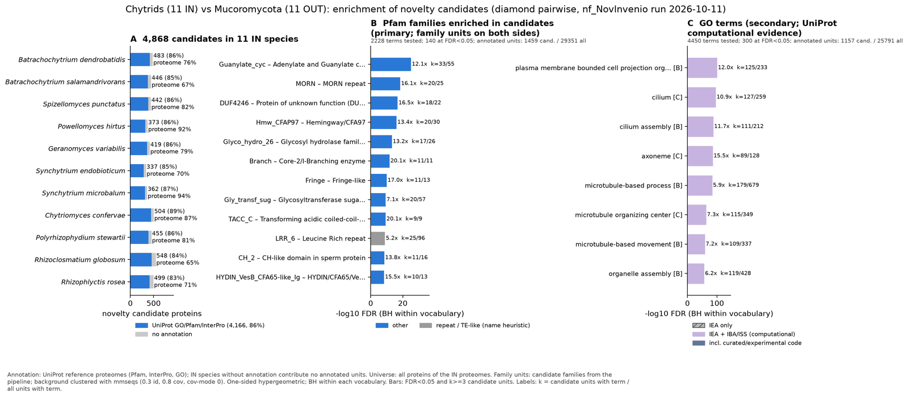

chytrid vs mucoromycota: functional enrichment (novelty)
One-sided hypergeometric test per term; Benjamini-Hochberg FDR within each scope, level and vocabulary. Candidates are the novelty candidates: gene families present in the IN group and absent from the OUT group. Universe: proteome. Background clustered: True (101239 sequences in 49924 clusters, mmseqs easy-cluster --min-seq-id 0.3 -c 0.8). Family level: one unit per candidate family and per background cluster.
Sources: Pfam: 2026-01-27-Pfam38.2; InterPro entries: 110.0; GO: releases/2026-07-26; analysis generated 2026-10-12T14:46:00. Source tables: studies/fungi/chytrid_vs_mucoromycota/analysis/enrichment/outputs/proteome_clustered.
Full record: PROVENANCE. Run report: report.html.
- Annotation provenance is not fully recorded: PROVENANCE.yaml lists the per-species annotation files and their checksums, but not the UniProt release they come from.
- GO results are secondary. GO annotations include computational evidence (IEA, IBA); the GO evidence column shows if a term has non-IEA support.
- Candidate families (pipeline clustering of candidates) and background clusters (mmseqs clustering of the background proteome) are made by different runs, so family-level counts are not fully comparable.
Summary figure

Annotation coverage
Fraction of proteins with at least one term per vocabulary. Universe = all proteins of the species; candidates = the candidate set.
| Species | Set | Proteins | Pfam | Pfam clan | InterPro | GO | Any |
|---|---|---|---|---|---|---|---|
| Batrdend | universe | 8610 | 68.0% | 55.5% | 75.5% | 64.4% | 75.9% |
| Batrdend | candidates | 483 | 73.3% | 53.2% | 85.9% | 51.5% | 86.3% |
| Batrsala | universe | 11060 | 60.0% | 49.6% | 66.2% | 53.6% | 66.6% |
| Batrsala | candidates | 446 | 70.2% | 44.4% | 85.4% | 57.4% | 85.4% |
| Spizpunc | universe | 8940 | 77.0% | 62.6% | 81.7% | 68.6% | 82.1% |
| Spizpunc | candidates | 442 | 75.6% | 46.8% | 85.8% | 57.0% | 86.4% |
| Powehirt | universe | 6533 | 88.3% | 72.6% | 92.2% | 79.7% | 92.5% |
| Powehirt | candidates | 373 | 74.0% | 45.8% | 85.2% | 58.2% | 85.5% |
| Geravari | universe | 8696 | 72.9% | 59.8% | 78.6% | 65.8% | 79.0% |
| Geravari | candidates | 419 | 73.3% | 47.0% | 85.0% | 57.3% | 85.7% |
| Syncendo | universe | 7895 | 64.4% | 52.3% | 69.6% | 59.2% | 70.0% |
| Syncendo | candidates | 337 | 69.4% | 44.5% | 83.4% | 59.4% | 84.6% |
| Syncmicr | universe | 6304 | 90.2% | 75.6% | 94.1% | 82.1% | 94.3% |
| Syncmicr | candidates | 362 | 72.9% | 47.5% | 86.5% | 59.7% | 87.0% |
| Chytconf | universe | 10661 | 80.1% | 68.1% | 86.9% | 72.9% | 87.3% |
| Chytconf | candidates | 504 | 75.8% | 51.8% | 88.7% | 62.3% | 88.9% |
| Polystew | universe | 9229 | 72.1% | 60.4% | 80.4% | 63.9% | 80.9% |
| Polystew | candidates | 455 | 69.0% | 45.3% | 84.4% | 54.9% | 85.7% |
| Rhizglob | universe | 16725 | 56.7% | 48.2% | 65.1% | 50.4% | 65.5% |
| Rhizglob | candidates | 548 | 67.7% | 48.9% | 83.0% | 55.5% | 83.6% |
| Rhizrose | universe | 11454 | 62.5% | 51.2% | 70.1% | 55.4% | 70.5% |
| Rhizrose | candidates | 499 | 68.3% | 43.1% | 82.0% | 55.3% | 82.6% |
| ALL_IN | universe | 106107 | 69.8% | 57.9% | 76.3% | 63.0% | 76.7% |
| ALL_IN | candidates | 4868 | 71.7% | 47.3% | 85.0% | 57.0% | 85.6% |
Tests summary
Per vocabulary: terms with FDR < 0.05 / terms tested. Protein level counts proteins; family level counts candidate families and background clusters.
| Scope | Level | Cand. units | Pfam sig / tested | Pfam clan sig / tested | InterPro sig / tested | GO sig / tested |
|---|---|---|---|---|---|---|
| whole_set | family | 2151 | 140 / 2228 | 35 / 442 | 251 / 4623 | 300 / 4450 |
| whole_set | protein | 4868 | 326 / 4739 | 51 / 513 | 532 / 9942 | 407 / 5959 |
| Batrdend | family | 410 | 6 / 238 | 10 / 200 | 10 / 629 | 60 / 1974 |
| Batrdend | protein | 483 | 8 / 307 | 8 / 215 | 17 / 785 | 79 / 2076 |
| Batrsala | family | 422 | 2 / 263 | 8 / 208 | 7 / 682 | 64 / 1943 |
| Batrsala | protein | 446 | 8 / 330 | 11 / 223 | 24 / 819 | 78 / 2038 |
| Chytconf | family | 432 | 6 / 391 | 8 / 244 | 13 / 972 | 89 / 2136 |
| Chytconf | protein | 504 | 11 / 590 | 8 / 280 | 20 / 1389 | 114 / 2408 |
| Geravari | family | 414 | 4 / 315 | 6 / 228 | 8 / 793 | 90 / 2041 |
| Geravari | protein | 419 | 4 / 372 | 6 / 241 | 8 / 928 | 97 / 2142 |
| Polystew | family | 417 | 5 / 315 | 8 / 215 | 13 / 799 | 77 / 1984 |
| Polystew | protein | 455 | 10 / 406 | 10 / 235 | 25 / 982 | 86 / 2095 |
| Powehirt | family | 368 | 4 / 302 | 6 / 222 | 7 / 755 | 70 / 1999 |
| Powehirt | protein | 373 | 4 / 358 | 10 / 234 | 8 / 880 | 75 / 2078 |
| Rhizglob | family | 496 | 4 / 440 | 9 / 244 | 16 / 1050 | 97 / 2440 |
| Rhizglob | protein | 548 | 15 / 596 | 14 / 268 | 32 / 1369 | 123 / 2624 |
| Rhizrose | family | 488 | 6 / 370 | 8 / 233 | 11 / 908 | 91 / 2128 |
| Rhizrose | protein | 499 | 6 / 408 | 8 / 244 | 12 / 1016 | 94 / 2194 |
| Spizpunc | family | 438 | 7 / 360 | 8 / 231 | 10 / 882 | 72 / 2442 |
| Spizpunc | protein | 442 | 7 / 424 | 8 / 245 | 10 / 1021 | 74 / 2536 |
| Syncendo | family | 331 | 1 / 248 | 3 / 198 | 4 / 628 | 70 / 1865 |
| Syncendo | protein | 337 | 2 / 296 | 6 / 214 | 5 / 735 | 72 / 1923 |
| Syncmicr | family | 348 | 4 / 287 | 8 / 211 | 6 / 731 | 70 / 1940 |
| Syncmicr | protein | 362 | 5 / 364 | 11 / 224 | 7 / 890 | 75 / 2049 |
Top 25 Pfam terms (whole set, family level)
25 rows shown, ordered by FDR then p-value; 25 have FDR < 0.05 (bold).
| Term | Name | k / N cand. | n / M bg | Fold | FDR (BH) |
|---|---|---|---|---|---|
| PF00211 | Guanylate_cyc: Adenylate and Guanylate cyclase catalytic domain | 33 / 1459 | 55 / 29351 | 12.07 | 6.79e-26 |
| PF02493 | MORN: MORN repeat | 20 / 1459 | 25 / 29351 | 16.094 | 3.49e-19 |
| PF14033 | DUF4246: Protein of unknown function (DUF4246) | 18 / 1459 | 22 / 29351 | 16.46 | 1.39e-17 |
| PF13879 | Hmw_CFAP97: Hemingway/CFA97 | 20 / 1459 | 30 / 29351 | 13.411 | 7.77e-17 |
| PF02156 | Glyco_hydro_26: Glycosyl hydrolase family 26 | 17 / 1459 | 26 / 29351 | 13.154 | 5.74e-14 |
| PF02485 | Branch: Core-2/I-Branching enzyme | 11 / 1459 | 11 / 29351 | 20.117 | 1.64e-12 |
| PF02434 | Fringe: Fringe-like | 11 / 1459 | 13 / 29351 | 17.022 | 1.00e-10 |
| PF04488 | Gly_transf_sug: Glycosyltransferase sugar-binding region containing DXD motif | 20 / 1459 | 57 / 29351 | 7.059 | 4.31e-10 |
| PF05010 | TACC_C: Transforming acidic coiled-coil-containing protein (TACC), C-terminal | 9 / 1459 | 9 / 29351 | 20.117 | 4.48e-10 |
| PF13516 | LRR_6: Leucine Rich repeat | 25 / 1459 | 96 / 29351 | 5.239 | 1.17e-09 |
| PF06294 | CH_2: CH-like domain in sperm protein | 11 / 1459 | 16 / 29351 | 13.831 | 3.10e-09 |
| PF22544 | HYDIN_VesB_CFA65-like_Ig: HYDIN/CFA65/VesB-like, Ig-like domain | 10 / 1459 | 13 / 29351 | 15.475 | 4.14e-09 |
| PF18027 | Pepdidase_M14_N: Cytosolic carboxypeptidase N-terminal domain | 9 / 1459 | 12 / 29351 | 15.088 | 5.95e-08 |
| PF11699 | CENP-C_C: Mif2/CENP-C like | 7 / 1459 | 7 / 29351 | 20.117 | 1.18e-07 |
| PF14580 | LRR_9: Leucine-rich repeat | 15 / 1459 | 47 / 29351 | 6.42 | 6.45e-07 |
| PF27813 | CCDC148: CCDC148 coiled-coil domain | 7 / 1459 | 8 / 29351 | 17.603 | 7.88e-07 |
| PF10629 | CMI2B-like: Ciliary microtubule inner protein 2B-like | 6 / 1459 | 6 / 29351 | 20.117 | 1.20e-06 |
| PF13863 | DUF4200: Domain of unknown function (DUF4200) | 6 / 1459 | 6 / 29351 | 20.117 | 1.20e-06 |
| PF14646 | MYCBPAP: MYCBP-associated protein family | 6 / 1459 | 6 / 29351 | 20.117 | 1.20e-06 |
| PF14988 | DUF4515: Domain of unknown function (DUF4515) | 6 / 1459 | 6 / 29351 | 20.117 | 1.20e-06 |
| PF15479 | DUF4639: Domain of unknown function (DUF4639) | 6 / 1459 | 6 / 29351 | 20.117 | 1.20e-06 |
| PF15625 | CC2D2AN-C2: CC2D2A N-terminal C2 domain | 6 / 1459 | 6 / 29351 | 20.117 | 1.20e-06 |
| PF21666 | DUF4246_N: Domain of unknown function DUF4246, N-terminal | 6 / 1459 | 6 / 29351 | 20.117 | 1.20e-06 |
| PF23277 | Ig_Dlec1_1: Deleted in lung and esophageal cancer protein 1 Ig domain | 6 / 1459 | 6 / 29351 | 20.117 | 1.20e-06 |
| PF28302 | FLJ43738_C: Uncharacterised protein FLJ43738 C-terminal domain | 6 / 1459 | 6 / 29351 | 20.117 | 1.20e-06 |
Top 25 InterPro terms (whole set, family level)
25 rows shown, ordered by FDR then p-value; 25 have FDR < 0.05 (bold).
| Term | Name | k / N cand. | n / M bg | Fold | FDR (BH) |
|---|---|---|---|---|---|
| IPR000805 | Family:Glycoside hydrolase family 26 | 24 / 1765 | 29 / 33597 | 15.753 | 7.16e-23 |
| IPR001054 | Domain:Adenylyl cyclase class-3/4/guanylyl cyclase | 33 / 1765 | 68 / 33597 | 9.238 | 4.74e-21 |
| IPR029787 | Homologous_superfamily:Nucleotide cyclase | 33 / 1765 | 71 / 33597 | 8.847 | 1.83e-20 |
| IPR022790 | Domain:Glycosyl hydrolase family 26 domain | 23 / 1765 | 32 / 33597 | 13.681 | 6.64e-20 |
| IPR003409 | Repeat:MORN repeat | 20 / 1765 | 25 / 33597 | 15.228 | 8.82e-19 |
| IPR049192 | Domain:Domain of unknown function DUF4246, C-terminal | 18 / 1765 | 22 / 33597 | 15.574 | 3.94e-17 |
| IPR029488 | Family:Hemingway/CFA97 | 20 / 1765 | 30 / 33597 | 12.69 | 2.76e-16 |
| IPR025340 | Family:Protein of unknown function DUF4246 | 18 / 1765 | 24 / 33597 | 14.276 | 4.91e-16 |
| IPR038792 | Family:CFAP97 domain-containing protein 1/2 | 16 / 1765 | 22 / 33597 | 13.844 | 8.95e-14 |
| IPR026050 | Family:C1GALT1/C1GALT1-specific chaperone 1 | 13 / 1765 | 14 / 33597 | 17.675 | 1.37e-13 |
| IPR003406 | Family:Glycosyl transferase, family 14 | 11 / 1765 | 11 / 33597 | 19.035 | 3.15e-12 |
| IPR043538 | Family:Xylosyltransferase | 11 / 1765 | 11 / 33597 | 19.035 | 3.15e-12 |
| IPR039902 | Family:Coiled-coil domain-containing protein CCDC148/CCDC112 | 12 / 1765 | 14 / 33597 | 16.316 | 1.25e-11 |
| IPR050697 | Family:Adenylyl/Guanylyl Cyclase Class-3/4 | 13 / 1765 | 19 / 33597 | 13.024 | 1.48e-10 |
| IPR003378 | Domain:Fringe-like, glycosyltransferase domain | 11 / 1765 | 13 / 33597 | 16.107 | 1.73e-10 |
| IPR011989 | Homologous_superfamily:Armadillo-like helical | 71 / 1765 | 532 / 33597 | 2.54 | 1.73e-10 |
| IPR052394 | Family:Leucine-rich repeat-containing protein | 12 / 1765 | 16 / 33597 | 14.276 | 1.73e-10 |
| IPR007707 | Domain:Transforming acidic coiled-coil-containing protein, C-terminal | 9 / 1765 | 9 / 33597 | 19.035 | 7.68e-10 |
| IPR007577 | Conserved_site:Glycosyltransferase, DXD sugar-binding motif | 20 / 1765 | 57 / 33597 | 6.679 | 1.05e-09 |
| IPR010441 | Domain:CH-like domain in sperm protein | 11 / 1765 | 16 / 33597 | 13.087 | 6.45e-09 |
| IPR053879 | Domain:HYDIN/VesB/CFA65-like, Ig-like domain | 10 / 1765 | 13 / 33597 | 14.642 | 8.50e-09 |
| IPR033351 | Family:Centrosomal protein POC5 | 8 / 1765 | 8 / 33597 | 19.035 | 1.15e-08 |
| IPR039915 | Family:TACC family | 8 / 1765 | 8 / 33597 | 19.035 | 1.15e-08 |
| IPR050821 | Family:Cytosolic carboxypeptidase | 10 / 1765 | 14 / 33597 | 13.597 | 2.48e-08 |
| IPR052111 | Family:Spermatogenesis and Ciliary Microtubule-associated Protein | 9 / 1765 | 11 / 33597 | 15.574 | 2.76e-08 |
Top 15 GO terms (whole set, family level) — secondary, computational evidence (IEA/IBA) included
15 rows shown, ordered by FDR then p-value; 15 have FDR < 0.05 (bold).
| Term | Name | k / N cand. | n / M bg | Fold | FDR (BH) | GO evidence | Families with non-IEA |
|---|---|---|---|---|---|---|---|
| GO:0044782 | biological_process:cilium organization | 125 / 1157 | 233 / 25791 | 11.959 | 4.15e-102 | has_non_IEA | 29 |
| GO:0120036 | biological_process:plasma membrane bounded cell projection organization | 125 / 1157 | 233 / 25791 | 11.959 | 4.15e-102 | has_non_IEA | 29 |
| GO:0030030 | biological_process:cell projection organization | 125 / 1157 | 234 / 25791 | 11.908 | 5.70e-102 | has_non_IEA | 29 |
| GO:0005929 | cellular_component:cilium | 127 / 1157 | 259 / 25791 | 10.93 | 1.43e-97 | has_non_IEA | 22 |
| GO:0042995 | cellular_component:cell projection | 127 / 1157 | 261 / 25791 | 10.847 | 3.34e-97 | has_non_IEA | 22 |
| GO:0120025 | cellular_component:plasma membrane bounded cell projection | 127 / 1157 | 261 / 25791 | 10.847 | 3.34e-97 | has_non_IEA | 22 |
| GO:0030031 | biological_process:cell projection assembly | 111 / 1157 | 212 / 25791 | 11.671 | 2.69e-89 | has_non_IEA | 26 |
| GO:0060271 | biological_process:cilium assembly | 111 / 1157 | 212 / 25791 | 11.671 | 2.69e-89 | has_non_IEA | 26 |
| GO:0120031 | biological_process:plasma membrane bounded cell projection assembly | 111 / 1157 | 212 / 25791 | 11.671 | 2.69e-89 | has_non_IEA | 26 |
| GO:0005930 | cellular_component:axoneme | 89 / 1157 | 128 / 25791 | 15.499 | 3.71e-87 | has_non_IEA | 18 |
| GO:0007017 | biological_process:microtubule-based process | 179 / 1157 | 679 / 25791 | 5.876 | 2.47e-85 | has_non_IEA | 38 |
| GO:0005815 | cellular_component:microtubule organizing center | 115 / 1157 | 349 / 25791 | 7.345 | 4.30e-65 | has_non_IEA | 24 |
| GO:0007018 | biological_process:microtubule-based movement | 109 / 1157 | 337 / 25791 | 7.21 | 1.23e-60 | has_non_IEA | 27 |
| GO:0070925 | biological_process:organelle assembly | 119 / 1157 | 428 / 25791 | 6.198 | 2.78e-58 | has_non_IEA | 28 |
| GO:0042073 | biological_process:intraciliary transport | 62 / 1157 | 99 / 25791 | 13.96 | 6.96e-56 | has_non_IEA | 15 |
Actin cytoskeleton controls
Known actin-related families and how many of their proteins pass each filter. Protein ID columns are left out.
| control | pfam_ids | desc_regex | IN_universe | IN_in_matrix | IN_pass_ingroup_rule | candidates | near_miss_out1 | near_miss_out2 | n_Batrdend | n_Batrsala | n_Spizpunc | n_Powehirt | n_Geravari | n_Syncendo | n_Syncmicr | n_Chytconf | n_Polystew | n_Rhizglob | n_Rhizrose | n_Mucocirc | n_Rhizdele | n_Lichcory | n_Phycblak | n_Absiglau | n_Syncrace | n_Choacucu | n_Hessvesi | n_Umbevina | n_Mortisab | n_Thamspha |
|---|---|---|---|---|---|---|---|---|---|---|---|---|---|---|---|---|---|---|---|---|---|---|---|---|---|---|---|---|---|---|
| Arp2/3 ARPC2 (P34-Arc) | PF04045 | 11 | 11 | 11 | 0 | 0 | 0 | 1 | 1 | 1 | 1 | 1 | 1 | 1 | 1 | 1 | 1 | 1 | 1 | 1 | 1 | 1 | 2 | 1 | 1 | 1 | 1 | 1 | 1 | |
| Arp2/3 ARPC3 (P21-Arc) | PF04062 | 11 | 11 | 11 | 0 | 0 | 0 | 1 | 1 | 1 | 1 | 1 | 1 | 1 | 1 | 1 | 1 | 1 | 1 | 0 | 1 | 1 | 1 | 1 | 1 | 1 | 1 | 1 | 1 | |
| Arp2/3 ARPC4 | PF05856 | 11 | 11 | 11 | 0 | 0 | 0 | 1 | 1 | 1 | 1 | 1 | 1 | 1 | 1 | 1 | 1 | 1 | 1 | 2 | 1 | 1 | 1 | 1 | 1 | 1 | 1 | 1 | 0 | |
| Arp2/3 ARPC5 (P16-Arc) | PF04699 | 12 | 12 | 12 | 0 | 0 | 0 | 1 | 1 | 1 | 1 | 1 | 1 | 1 | 2 | 1 | 1 | 1 | 1 | 1 | 0 | 1 | 1 | 1 | 1 | 1 | 1 | 1 | 1 | |
| Arp2/3 ARPC1 (description only) | arp2/3 complex.*(41|p41|subunit 1)|ARPC1 | 2 | 2 | 2 | 0 | 0 | 0 | 0 | 1 | 0 | 0 | 0 | 1 | 0 | 0 | 0 | 0 | 0 | 0 | 0 | 0 | 0 | 0 | 0 | 0 | 0 | 0 | 0 | 0 | |
| Arp2 / Arp3 (description only) | actin-related protein (2|3)\b|\bARP[23]\b | 70 | 70 | 69 | 0 | 0 | 0 | 6 | 7 | 6 | 7 | 6 | 7 | 6 | 6 | 8 | 5 | 6 | 6 | 7 | 5 | 5 | 8 | 5 | 8 | 7 | 7 | 7 | 4 | |
| WAVE complex NCKAP1 | PF09735 | 9 | 9 | 9 | 8 | 0 | 0 | 1 | 1 | 1 | 1 | 1 | 1 | 1 | 0 | 1 | 0 | 1 | 0 | 0 | 0 | 0 | 0 | 0 | 0 | 0 | 0 | 0 | 0 | |
| WAVE complex CYFIP (FragX_IP) | PF05994 | 9 | 9 | 9 | 9 | 0 | 0 | 1 | 1 | 1 | 1 | 1 | 1 | 1 | 0 | 1 | 0 | 1 | 0 | 0 | 0 | 0 | 0 | 0 | 0 | 0 | 0 | 0 | 0 | |
| WAVE complex ABI | PF07815|PF27594 | 0 | 0 | 0 | 0 | 0 | 0 | 0 | 0 | 0 | 0 | 0 | 0 | 0 | 0 | 0 | 0 | 0 | 0 | 0 | 0 | 0 | 0 | 0 | 0 | 0 | 0 | 0 | 0 | |
| SCAR/WAVE (SCAR_helical) | PF27569 | 9 | 9 | 9 | 9 | 0 | 0 | 1 | 1 | 1 | 1 | 1 | 1 | 1 | 0 | 1 | 0 | 1 | 0 | 0 | 0 | 0 | 0 | 0 | 0 | 0 | 0 | 0 | 0 | |
| WASP family (WH1) | PF00568 | 11 | 11 | 11 | 0 | 0 | 0 | 1 | 1 | 1 | 1 | 1 | 1 | 1 | 1 | 1 | 1 | 1 | 3 | 1 | 1 | 1 | 2 | 3 | 2 | 3 | 2 | 2 | 1 | |
| WH2 motif (WASP, WAVE, others) | PF02205 | 12 | 10 | 8 | 0 | 2 | 0 | 3 | 1 | 1 | 1 | 1 | 1 | 1 | 1 | 1 | 0 | 1 | 2 | 1 | 2 | 0 | 3 | 2 | 2 | 3 | 2 | 3 | 0 | |
| Formin FH2 | PF02181 | 50 | 50 | 49 | 3 | 0 | 0 | 4 | 6 | 4 | 4 | 4 | 3 | 4 | 5 | 6 | 5 | 5 | 8 | 9 | 7 | 3 | 9 | 6 | 6 | 7 | 4 | 4 | 2 | |
| Formin Drf_GBD / Drf_FH3 / Drf_DAD | PF06371|PF06367|PF06345 | 40 | 40 | 36 | 2 | 1 | 0 | 3 | 4 | 4 | 3 | 4 | 2 | 3 | 3 | 4 | 3 | 7 | 8 | 11 | 7 | 6 | 10 | 7 | 8 | 8 | 7 | 7 | 2 | |
| Ena/VASP (VASP_tetra) | PF08776 | 0 | 0 | 0 | 0 | 0 | 0 | 0 | 0 | 0 | 0 | 0 | 0 | 0 | 0 | 0 | 0 | 0 | 0 | 0 | 0 | 0 | 0 | 0 | 0 | 0 | 0 | 0 | 0 | |
| Coronin (description only) | coronin | 27 | 27 | 26 | 1 | 0 | 0 | 1 | 1 | 3 | 3 | 4 | 1 | 2 | 4 | 2 | 2 | 4 | 1 | 3 | 2 | 2 | 3 | 2 | 1 | 2 | 2 | 2 | 1 | |
| Cortactin (HS1_rep) | PF02218 | 0 | 0 | 0 | 0 | 0 | 0 | 0 | 0 | 0 | 0 | 0 | 0 | 0 | 0 | 0 | 0 | 0 | 0 | 0 | 0 | 0 | 0 | 0 | 0 | 0 | 0 | 0 | 0 | |
| Myosin 2 tail (Myosin_tail_1) | PF01576 | 12 | 11 | 11 | 0 | 1 | 0 | 1 | 1 | 1 | 1 | 1 | 1 | 1 | 1 | 1 | 1 | 2 | 0 | 0 | 0 | 0 | 0 | 0 | 0 | 0 | 0 | 1 | 1 | |
| Myosin head (all myosins) | PF00063 | 101 | 101 | 100 | 0 | 0 | 0 | 7 | 8 | 9 | 9 | 7 | 6 | 9 | 13 | 7 | 14 | 12 | 17 | 19 | 14 | 16 | 18 | 11 | 16 | 13 | 8 | 9 | 5 |
Page written by bin/generate_enrichment_page.py.